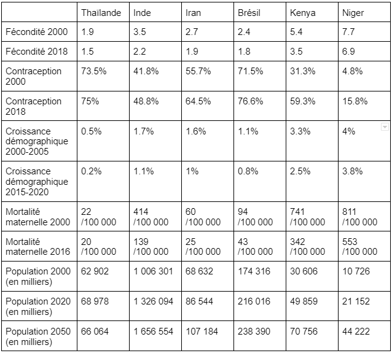

La contraception n'est pas anodine, elle a des répercutions démographiques et économiques au sein des différents pays.
MOINS DE BÉBÉS !
Lorsque l'usage de la contraception est favorisé dans un pays le taux de fécondité et donc le nombre de naissances diminuent logiquement. Mais moins de naissances engendre aussi d'autres phénomènes !
Et logiquement si les naissances sont moins importantes cela fait moins de population, moins de consommateurs, moins de travailleurs et donc, une croissance démographique qui ralentit.

LE VIEILLISSEMENT DE LA POPULATION
La contraception entraînant une baisse de la natalité conduit aussi au vieillissement de la population. Dans les pays où l'utilisation des procédés est importante, le taux de natalité est faible, c'est aussi dans ces pays que le vieillissement de la population est le plus visible. Au Niger, l'âge médian de la population est de 17 ans contre 43 ans en moyenne pour l'Union Européenne.
La contraception, en influençant la démographie, permet alors de contrôler les naissances. Mais le contrôle des naissances se révèle être un défi tant en termes de dépenses que de politiques.
DÉPENSES FAMILIALES
Les dépenses pour les enfants se divisent en plusieurs catégories; éducation, bien-être, santé, loisirs, etc. Les parents sont les premiers à investir pour leurs enfants, ils effectuent les dépenses de premires nécessité. En France les parents consacrent environ 9000 par an et par enfant. Avoir un enfant coûte donc de l'argent mais aussi du temps; il faut s'en occuper. Le temps passé avec les enfant n'est pas un temps passé au travail et donc il y a un manque à gagner.
L'INVESTISSEMENT DE L'ÉTAT
Avoir un enfant a donc un prix et tous les pays ne peuvent pas prendre en charge économiquement les enfants, cela est visible avec le degrès d'instruction. Les pays du Nord comme la France ou la Suède investissent largement pour les enfants et ont un degrè d'instruction élevé. À contrario, les pays du Sud, notamment d'Afrique ont de faible taux de scolarisation car les dépenses publiques sont peu consacrées aux enfants. Certains pays sont donc plus aptes à prendre en charge les enfans économiquement parlant que d'autres.
Avoir un enfant n'est donc pas sans conséquences, aussi bien pour les parents que pour l'État en termes de dépenses et de qualité de vie. C'est alors que sont apparues des politiques de limitation des naissances, politiques plus ou moins forcées pour contrôler la démographie et l'économie.
POLITIQUES HARD
Il existe plusieurs politiques contraintes de contrôle de naissances comme les stérilisations contraintes massives ou les avortements forcés. La plus célèbre est tristement la politique de l'enfant unique en Chine. Pour les antinatalistes, il est soutenu qu'une augmentation trop importante de la population aurait un impact négatif sur le développement économique d'un État et contribuerait aussi à l'augmentation de la pauvreté. Mais ces politiques ne prennent pas en compte l'immoralité infligée aux parents.
POLITIQUES SOFT
Il existe, fort heureusement, différentes manières qui peuvent être qualifiées de "soft" qui visent, elles aussi, à contrôer la démographie. Ces politiques peuvent s'appuyer sur une baisse des allocations familiales et sur un accroissement de la disponibilité des contraceptifs, voire de leur gratuité. Ces pratiques sont alors plus morales et moins nocives pour les personnes concernées.
La contraception est un réel outil politique qui peut influer sur la démographie et l'économie d'un pays, d'où l'existence de politiques plus ou moins douces et morales.
Retournez à l'accueil pour découvrir d'autres volets sur la contraception, lisez un article sur le coût des enfants ou bien allez directement à la page suivante !